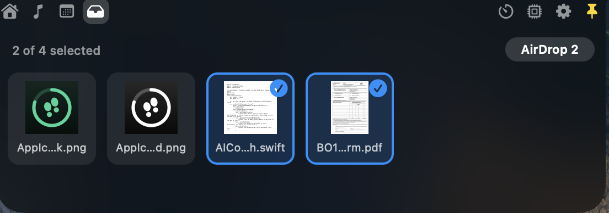
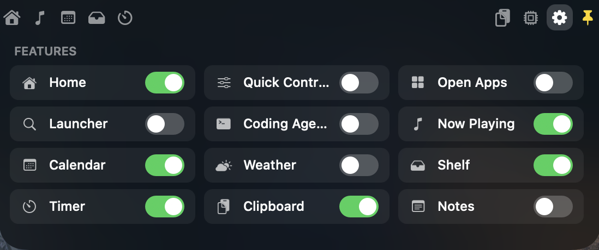

Make the notch
actually useful.
Hover the notch and it opens into music with synced lyrics, your calendar, quick controls, a file shelf and more. No menu bar clutter. Runs on your Mac, nothing leaves it.
macOS 13 or later · MacBook with a notch · Free download

What's inside
Player with synced lyrics
Works with Spotify and Apple Music. Lyrics follow the singer. For songs with no timing, tap along once and it remembers.
Month view and one-click join
Click a day to see its events. A green Join button opens Zoom, Meet, Teams, Webex, Whereby or Jitsi calls.
Approve from the notch
Allow or deny Claude Code and Codex requests without switching windows. If the notch isn't running, your agent asks you as usual.
Park files, AirDrop them
Drag files onto the notch, pick the ones you want and AirDrop them from there.
Volume, sound output, more
Volume, dark mode, Wi-Fi, keep awake and Focus in one place. Swipe to change tabs or songs.
AirPods, timers, battery
See when AirPods connect and their battery, get a chime when a timer ends, and see battery time left.
A closer look



Free, and made by one person
Notch Island is free and open source (MIT licence). If it saves you time, you can help keep it going.
Who made it
Built by YOUR NAME in Accra, Ghana. I make Mac apps and tools for small businesses. Say hello: YOUR_EMAIL
Install in a minute
- Download the latest release and unzip it.
- Drag NotchIsland.app into your Applications folder.
- Open it. If macOS blocks it, go to System Settings → Privacy & Security and click Open Anyway.
- Move your pointer to the notch. In Settings, turn on Open at login.
Questions
Why does macOS say it can't verify the app?
The app isn't signed with a paid Apple Developer ID yet, so macOS asks you to confirm the first time. Use Open Anyway as shown above. The full source code is on GitHub for anyone to check.
Does it send my data anywhere?
No account and no tracking. The only network requests are the weather for the city you type, lyrics lookups (artist, title and length only) and the update check.
What permissions does it ask for?
Calendar (for the Calendar tab), control of Music or Spotify (for Now Playing) and Bluetooth (for AirPods alerts). All are optional.
Why does the menu bar drop down when I touch the top of the screen?
That's macOS's auto-hide menu bar. Change it in System Settings → Control Center → "Automatically hide and show the menu bar".
Will it work on a Mac without a notch?
It's built for notched MacBooks. On other Macs it sits at the top centre of the screen.